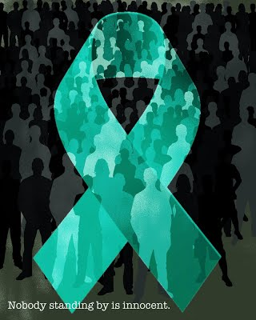

Victims are encouraged to seek medical services to discuss both short-term and long-term health concerns.
You can talk to a SANE nurse (SEXUAL ASSAULT NURSE EXAMINER) anytime by calling the Southwest Health Emergency Center directly at
608-342-4730.
What is Sexual Assault?
Sexual Assault:
Is a criminal act of power. According to Wisconsin law, sexual assault is "any intentional act of sexual contact or sexual intercourse accomplished without the consent of one of the persons."
Includes incest, rape, acquaintance and date rape, marital rape, child sexual assault, exposure, sexual harassment and voyeurism.
Is everyone's problem. It can happen to anyone, at any time, at any place.
Can happen to people of any age, sex, race, income level, sexual orientation or physical ability. The majority of sexual assault survivors are assaulted by someone they know.
Uses a threat of force, control, manipulation, violence, or sex as a weapon. It can be a physical or verbal act, which breaks a person's security and trust.
May include incest. Incest is a betrayal of trust involving sexual activity between people who are related or are perceived to be related. This may include abuse, intercourse, verbal seduction, objectification, sodomy, direct or implied threats or touching.
You are not to blame. You are not alone. Help is available.
What Should I Do If I am Sexually Assaulted?

Sexual assault is neither "asked for" nor deserved. "Giving in" to sexual activity is not the same as consenting. Do what you must to survive.
Scream as loudly and deeply as you can. This may startle the attacker long enough for you to get away.
Buy time with talk. Conversing will distract the attacker while you plan an escape.
If you choose to defend yourself, attack and make it count. Choose your movement carefully; then, attack quickly and aggressively.
Strike at the vulnerable areas. Go for the eyes, nose, throat, groin and knees.
Try to remember as many details as possible about the attacker and the attack.
A victim is NEVER responsible for an assault. Do not blame yourself for being assaulted.
Go immediately to a safe place. Try not to damage potential evidence. Do not bathe, wash, shower, douse, change or discard clothes. Seek medical attention.
Strongly consider reporting the assault to the police. This should be done immediately so a medical evidence collection exam can be completed.
Strongly consider making contact with Family Advocates' Sexual Assault Services. We can assist you with information, support, counseling, and advocacy whether or not you call the police. Any contact with an advocate is completely confidential.
What Services Does Family Advocates Sexual Assault Service Provide?
Family Advocates is a non-profit agency serving Grant, Iowa, and Lafayette Counties. As advocates we are dedicated to helping assault/incest victims, survivors and their friends and families.
Services are:
Free and confidential 24-hour help line
Counseling and advocacy by phone and in person
Emergency shelter
Emotional support
Sexual assault/Incest support groups
Information services and referrals
Community education to schools and organizations
Advocacy for court procedures
Assistance in completing legal forms and Crime Victim Compensation applications
What Can I Do To Help Someone I Know?
Believe them, listen, and allow for silent time.
Reinforce the fact that you believe the assault/abuse was not their fault. Avoid "victim blaming" statements like, "What were you wearing?" or "Were you drinking?"
Try not to be judgmental in your questions or interactions.
Let them know that you are willing to listen, whenever they would like to talk.
Provide options. Be patient.
Ask permission before hugging or touching the survivor.
Deal with what survivors want, not what you think they need.
Ask about suicidal thoughts.
If you don't have the proper information, say so.
Share information about other resources available to survivors and their family or friends, for support and for other needs.